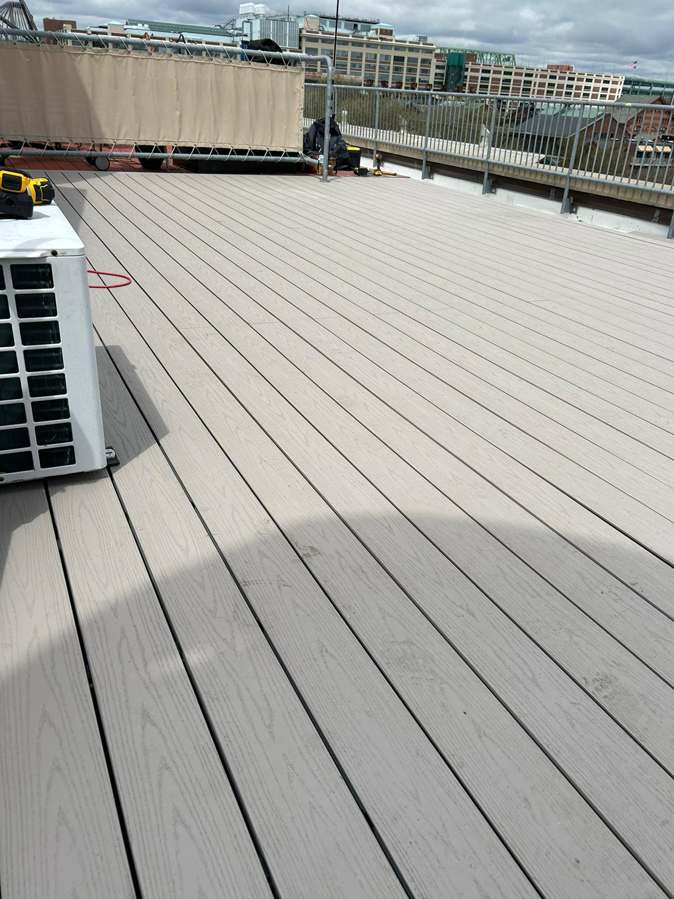
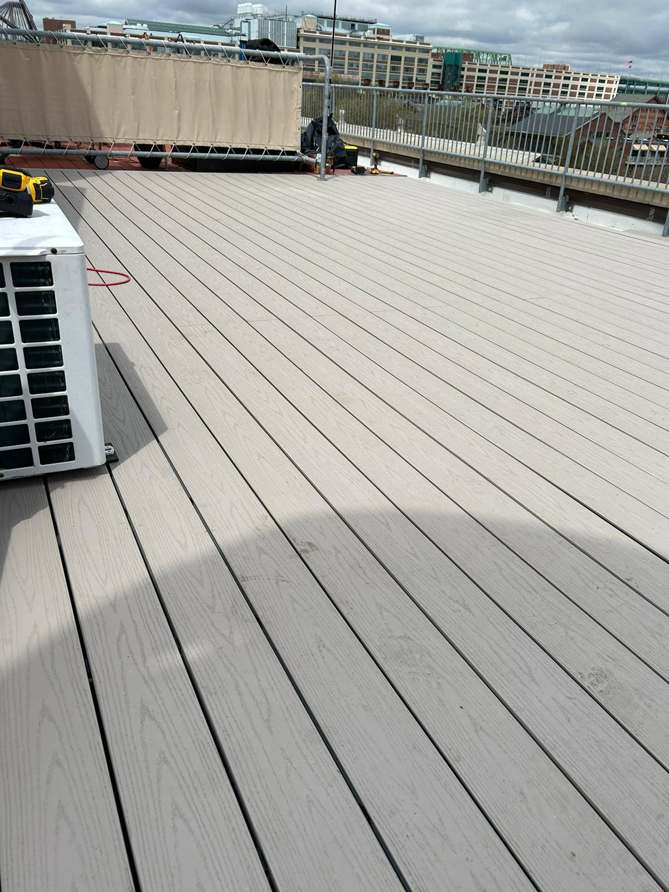
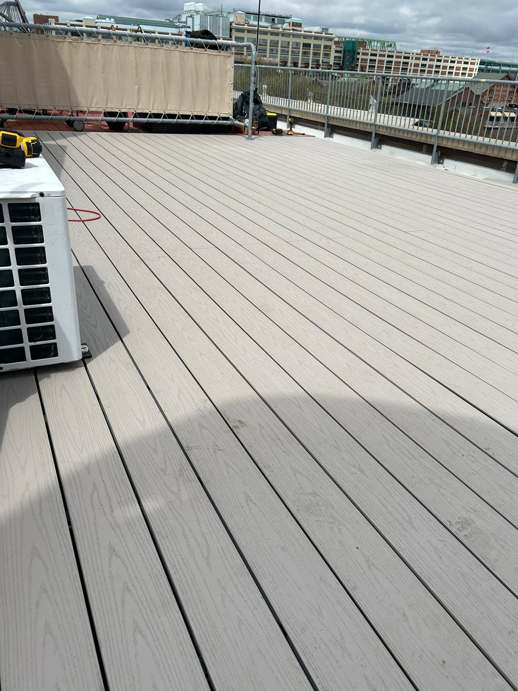

Turning wood into art since 1985
At Levi Construction, we have over 35 years of experience creating unique and high-quality pieces. Whether for residential or commercial projects, our dedication to excellence is what sets us apart.

"Levi Construction's custom doors transformed my home. Excellent work!"
"Great professionalism and attention to detail. The windows turned out perfect!"